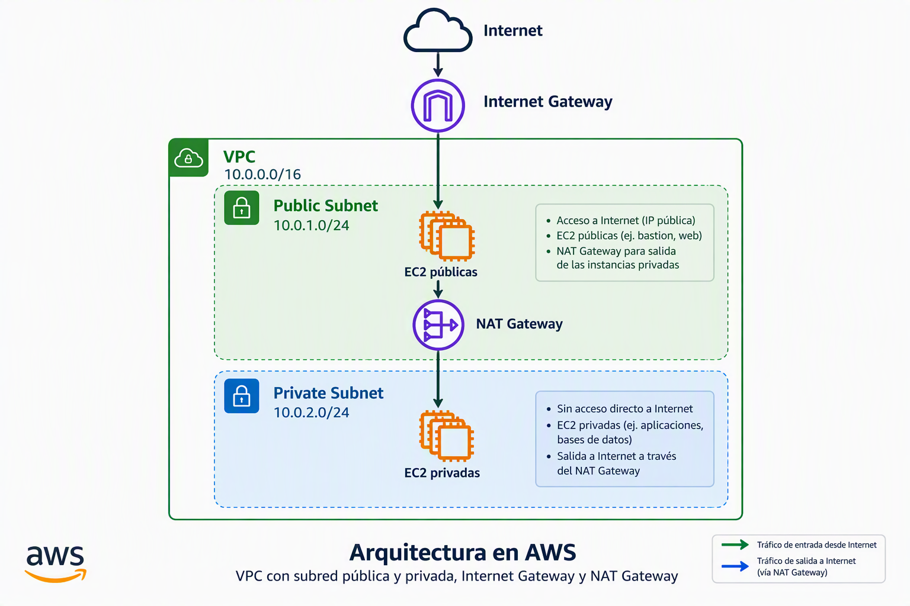

Prácticas UD3
Dentro de esta sección vamos a detallar las prácticas de la unidad didáctica 3 en la que trabajaremos administrando almacenamiento de bloques y ficheros.
Consideraciones comunes a todas las prácticas de esta unidad
La variable $username
Recuerda que cuando pongamos $username en el nombre sustituimos por la primera letra de nuestro nombre (si tenemos varios nombres, sólo usaremos la primera letra del primer nombre), primera letra del apellido y segundo apellido completo (si no tienes segundo apellido, pon el primer apellido completo). Por ejemplo, en mi caso que soy Rafael González Centeno $username = rgcentenoEsto permitirá ver la autoría de las prácticas
Script que crea VPC con subred pública y subred privada

#!/bin/bash
set -e
####################################
# VARIABLES
####################################
REGION="us-east-1"
vpc_name="LabVPC"
vpc_cidr="10.0.0.0/16"
public_subnet="PublicSubnet"
public_cidr="10.0.1.0/24"
private_subnet="PrivateSubnet"
private_cidr="10.0.2.0/24"
####################################
# CREAR VPC
####################################
echo "Creando VPC..."
VPC_ID=$(aws ec2 create-vpc \
--cidr-block "$vpc_cidr" \
--region "$REGION" \
--query 'Vpc.VpcId' \
--output text)
aws ec2 wait vpc-available \
--vpc-ids "$VPC_ID" \
--region "$REGION"
aws ec2 create-tags \
--resources "$VPC_ID" \
--tags Key=Name,Value="$vpc_name" \
--region "$REGION"
echo "VPC creada: $VPC_ID"
####################################
# HABILITAR DNS
####################################
aws ec2 modify-vpc-attribute \
--vpc-id "$VPC_ID" \
--enable-dns-support \
--region "$REGION"
aws ec2 modify-vpc-attribute \
--vpc-id "$VPC_ID" \
--enable-dns-hostnames \
--region "$REGION"
####################################
# OBTENER AZ
####################################
AZ=$(aws ec2 describe-availability-zones \
--region "$REGION" \
--query 'AvailabilityZones[0].ZoneName' \
--output text)
echo "AZ seleccionada: $AZ"
####################################
# CREAR SUBRED PÚBLICA
####################################
PUBLIC_SUBNET_ID=$(aws ec2 create-subnet \
--vpc-id "$VPC_ID" \
--cidr-block "$public_cidr" \
--availability-zone "$AZ" \
--region "$REGION" \
--query 'Subnet.SubnetId' \
--output text)
aws ec2 create-tags \
--resources "$PUBLIC_SUBNET_ID" \
--tags Key=Name,Value="$public_subnet" \
--region "$REGION"
aws ec2 modify-subnet-attribute \
--subnet-id "$PUBLIC_SUBNET_ID" \
--map-public-ip-on-launch
echo "Subred pública: $PUBLIC_SUBNET_ID"
####################################
# CREAR SUBRED PRIVADA
####################################
PRIVATE_SUBNET_ID=$(aws ec2 create-subnet \
--vpc-id "$VPC_ID" \
--cidr-block "$private_cidr" \
--availability-zone "$AZ" \
--region "$REGION" \
--query 'Subnet.SubnetId' \
--output text)
aws ec2 create-tags \
--resources "$PRIVATE_SUBNET_ID" \
--tags Key=Name,Value="$private_subnet" \
--region "$REGION"
echo "Subred privada: $PRIVATE_SUBNET_ID"
####################################
# INTERNET GATEWAY
####################################
IGW_ID=$(aws ec2 create-internet-gateway \
--region "$REGION" \
--query 'InternetGateway.InternetGatewayId' \
--output text)
aws ec2 attach-internet-gateway \
--internet-gateway-id "$IGW_ID" \
--vpc-id "$VPC_ID" \
--region "$REGION"
echo "Internet Gateway: $IGW_ID"
####################################
# ROUTE TABLE PÚBLICA
####################################
PUBLIC_RT_ID=$(aws ec2 create-route-table \
--vpc-id "$VPC_ID" \
--region "$REGION" \
--query 'RouteTable.RouteTableId' \
--output text)
aws ec2 create-route \
--route-table-id "$PUBLIC_RT_ID" \
--destination-cidr-block 0.0.0.0/0 \
--gateway-id "$IGW_ID" \
--region "$REGION"
aws ec2 associate-route-table \
--route-table-id "$PUBLIC_RT_ID" \
--subnet-id "$PUBLIC_SUBNET_ID" \
--region "$REGION"
####################################
# EIP PARA NAT
####################################
EIP_ALLOC_ID=$(aws ec2 allocate-address \
--domain vpc \
--region "$REGION" \
--query 'AllocationId' \
--output text)
echo "Elastic IP: $EIP_ALLOC_ID"
####################################
# NAT GATEWAY
####################################
NAT_GW_ID=$(aws ec2 create-nat-gateway \
--subnet-id "$PUBLIC_SUBNET_ID" \
--allocation-id "$EIP_ALLOC_ID" \
--region "$REGION" \
--query 'NatGateway.NatGatewayId' \
--output text)
echo "Esperando a que el NAT Gateway esté disponible..."
aws ec2 wait nat-gateway-available \
--nat-gateway-ids "$NAT_GW_ID" \
--region "$REGION"
echo "NAT Gateway: $NAT_GW_ID"
####################################
# ROUTE TABLE PRIVADA
####################################
PRIVATE_RT_ID=$(aws ec2 create-route-table \
--vpc-id "$VPC_ID" \
--region "$REGION" \
--query 'RouteTable.RouteTableId' \
--output text)
aws ec2 create-route \
--route-table-id "$PRIVATE_RT_ID" \
--destination-cidr-block 0.0.0.0/0 \
--nat-gateway-id "$NAT_GW_ID" \
--region "$REGION"
aws ec2 associate-route-table \
--route-table-id "$PRIVATE_RT_ID" \
--subnet-id "$PRIVATE_SUBNET_ID" \
--region "$REGION"
####################################
# RESUMEN
####################################
echo ""
echo "=========================================="
echo "VPC : $VPC_ID"
echo "IGW : $IGW_ID"
echo "Public Subnet : $PUBLIC_SUBNET_ID"
echo "Private Subnet : $PRIVATE_SUBNET_ID"
echo "Public RT : $PUBLIC_RT_ID"
echo "Private RT : $PRIVATE_RT_ID"
echo "Elastic IP : $EIP_ALLOC_ID"
echo "NAT Gateway : $NAT_GW_ID"
echo "=========================================="